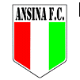

Resultados
Plaza Carreta
vs
 Ferrocarril
Ferrocarril
Ferrocarril
Ferrocarril
 Rampla
Rampla
Tabla Anual de Posiciones
| Posición | Equipo | Puntos |
|---|---|---|
| 1 | Plaza Carreta | 20 |
| 2 | Ferro Carril |
16 |
| 3 | Rampla Juniors |
13 |
| 4 |  Nacional Tranqueras Nacional Tranqueras |
12 |
| 5 |  Ansina | 12 |
| 6 |  Artigas Artigas |
10 |
¡Plaza Carreta campeón de la Divisional B!
En la noche de ayer se disputó, con una muy buena asistencia de aficionados, la final del certamen de la Divisional B entre los dos equipos ya ascendidos.
Esta noche, en el Estadio Municipal se definirá el campeón de la Divisional B
Divisional B: Ferro Carril clasificó a la final y selló el ascenso a la “A”
Lo que sucedió ayer fue realmente lamentable para nuestro fútbol, que debió jugar, porque así lo resolvieron los clubes propietarios de canchas, en dos escenarios diferentes a la misma hora y todo sorpresivamente.
Hoy se juega la semifinal de la “B” en la cancha de Sarandí y la final de la sub-20 en el Estadio
En principio se estableció claramente que la Intendencia Departamental ha cedido las instalaciones del Estadio “Atilio Paiva Olivera” solamente para la disputa de finales y no de semifinales.

Era imposible decidir una instancia tan trascendente en medio del agua
Parecía algo obvio que se iba a suspender la actividad fijada para el sábado, en el marco de la semifinal del certamen de la Divisional B.

En el Estadio es imposible y habrá que cruzar los dedos para jugar en la cancha de Sarandí
Con la enorme cantidad de agua caída en los últimos días hay que suponer que el Estadio “Atilio Paiva Olivera” ya estaría descartado como escenario de la semifinal del certamen de la Divisional B.